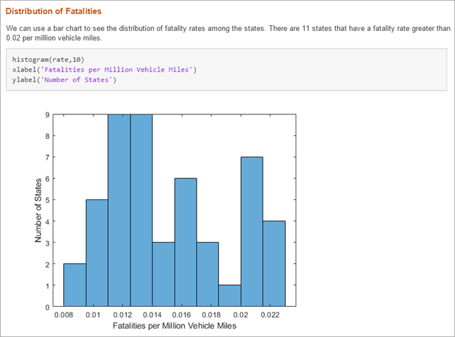
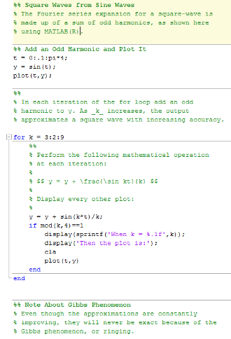
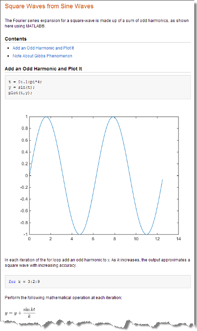

Publish and Share MATLAB Code
MATLAB® provides options for presenting your code to others. You can publish your
plain text MATLAB Code files (.m) to create formatted documents, show the
files as a full-screen presentation, or create and share live scripts and live functions
in the Live Editor.
Create and Share Live Scripts in the Live Editor
The easiest way to create cohesive, sharable documents that include executable
MATLAB code, embedded output, and formatted text is to use the Live Editor.
Supported output formats include: Live Code file format (.m and
.mlx), PDF, Microsoft® Word, HTML, and LaTeX. For details, see Create Live Scripts in the Live Editor.

Publish MATLAB Code Files (.m)
To create shareable documents using your MATLAB Code files (.m), you can
publish the files. Publishing a MATLAB Code file creates a formatted document that includes your code,
comments, and output. Common reasons to publish code are to share the documents with
others for teaching or demonstration, or to generate readable, external
documentation of your code.
This code demonstrates the Fourier series expansion for a square wave.
MATLAB Code with Markup | Published Document |
|---|---|

|

|
To publish your code:
Create a MATLAB script or function. Divide the code into steps or sections by inserting two percent signs (
%%) at the beginning of each section.Document the code by adding explanatory comments at the beginning of the file and within each section.
Within the comments at the top of each section, you can add markup that enhances the readability of the output. For example, the code in the preceding table includes the following markup.
Titles
%% Square Waves from Sine Waves%% Add an Odd Harmonic and Plot It%% Note About Gibbs PhenomenonVariable name in italics
% As _k_ increases, ...LaTeX equation
% $$ y = y + \frac{sin(k*t)}{k} $$Note
When you have a file containing text that has characters in a different encoding than that of your platform, when you save or publish your file, MATLAB displays those characters as garbled text.
Publish the code. On the Publish tab, click Publish.
By default, MATLAB creates a subfolder named
html, which contains an HTML file and files for each graphic that your code creates. The HTML file includes the code, formatted comments, and output. Alternatively, you can publish to other formats, such as PDF files or Microsoft PowerPoint® presentations. For more information on publishing to other formats, see Specify Output File.In MATLAB Online™, to allow MATLAB to open output windows automatically when publishing, enable pop-up windows in your Web browser.
After publishing the code, you can share the folder containing the published files. For more information, see Share Folders Using MATLAB Drive.
Show Files as Full-Screen Presentation
You can share files in MATLAB by showing them as a full-screen presentation. With a file open in the Editor, go to the View tab and click the Full Screen button on. The Editor shows the file in full-screen mode. Alternatively, you can use the Ctrl+F11 keyboard shortcut. On macOS, use the Command+F11 keyboard shortcut instead.
To exit full-screen mode, move the mouse to the top of the screen to display the View tab and click the Full Screen button off. You also can use the Exit fullscreen button at the top-right of the screen.
Add Help and Create Documentation
You can add help to your code by inserting comments at the start of a MATLAB code file. MATLAB displays the help comments when you type help
file_name in the Command Window. For more information,
see Add Help for Your Program.
You also can create your own documentation topics for viewing alongside the MathWorks® documentation in the system web browser. For more information, see Display Custom Documentation